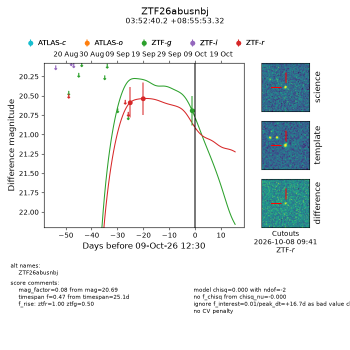
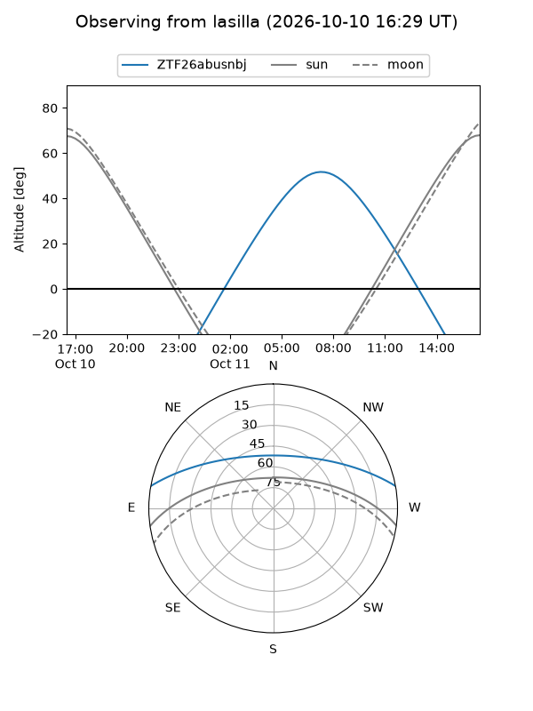
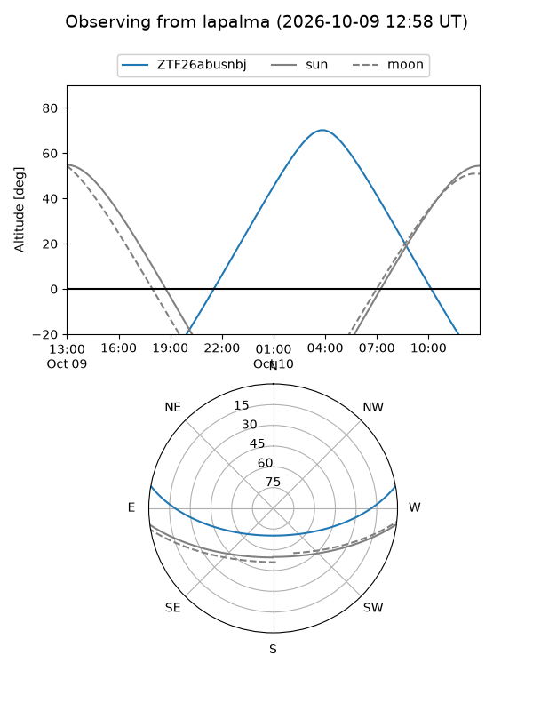
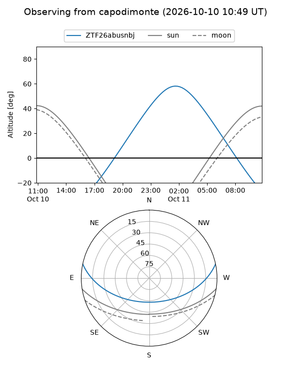
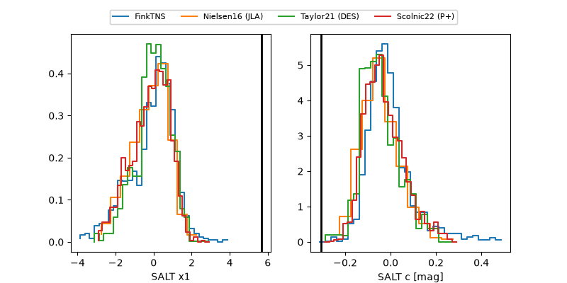

ZTF26abusnbj
Target ZTF26abusnbj at 2026-10-09 12:32
Aliases and brokers:
FINK-ZTF: ztf.fink-portal.org/ZTF26abusnbj
Lasair-ZTF: lasair-ztf.lsst.ac.uk/objects/ZTF26abusnbj
ALeRCE-ZTF: alerce.online/object/ZTF26abusnbj
Direct TNS query: direct search
alt names
ZTF26abusnbj (ztf,fink_ztf)
Coordinates:
equatorial (ra, dec) = 58.1677,+8.93148
equatorial (HMS+DMS) = 03:52:40.24,+08:55:53.32
galactic (l, b) = (179.9946,-33.19842)
Flags:
peak dt: +16.7
Photometry:
last ztfg=20.69, ztfr=20.53
1 ztfg, 2 ztfr detections
Lightcurve

Visibility



Additional plots
